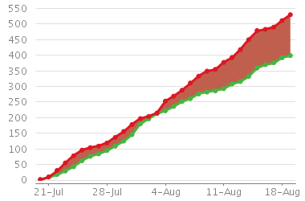
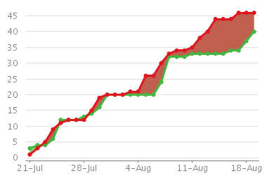

Apache Storm and Apache Spark Streaming
Table of Contents
This is the last post in the series on real-time systems. In the first post we discussed Apache Storm and Apache Kafka. In the second post we discussed Apache Spark (Streaming). In both posts we examined a small Twitter Sentiment Analysis program. Today, we will be reviewing both systems: how they compare and how they contrast.
The intention is not to cast judgment over one project or the other, but rather to exposit the differences and similarities. Any judgments made, subtle or not, are mistakes in exposition and/or organization and are not actual endorsements of either project.
Apache Storm
"Storm is a distributed real-time computation system" Storm. Apache Storm is a task parallel continuous computational engine. It defines its workflows in Directed Acyclic Graphs (DAG's) called "topologies". These topologies run until shutdown by the user or encountering an unrecoverable failure.
Storm does not natively run on top of typical Hadoop clusters, it uses Apache ZooKeeper and its own master/minion worker processes to coordinate topologies, master and worker state, and the message guarantee semantics. That said, both Yahoo! and Hortonworks are working on providing libraries for running Storm topologies on top of Hadoop 2.x YARN clusters. Furthermore, Storm can run on top of the Mesos scheduler as well, natively and with help from the Marathon framework.
Regardless though, Storm can certainly still consume files from HDFS and/or write files to HDFS.
Apache Spark (Streaming)
"Apache Spark is a fast and general purpose engine for large-scale data processing" Spark. Apache Spark is a data parallel general purpose batch processing engine. Workflows are defined in a similar and reminiscent style of MapReduce, however, is much more capable than traditional Hadoop MapReduce. Apache Spark has its Streaming API project that allows for continuous processing via short interval batches. Similar to Storm, Spark Streaming jobs run until shutdown by the user or encounter an unrecoverable failure.
Apache Spark does not itself require Hadoop to operate. However, its data parallel paradigm requires a shared filesystem for optimal use of stable data. The stable source can range from S3, NFS, or, more typically, HDFS.
Executing Spark applications does not require Hadoop YARN. Spark has its own standalone master/server processes. However, it is common to run Spark applications using YARN containers. Furthermore, Spark can also run on Mesos clusters.
Development
As of this writing, Apache Spark is a full, top level Apache project. Whereas
Apache Storm is currently undergoing incubation. Moreover, the latest stable
version of Apache Storm is 0.9.2 and the latest stable version of Apache
Spark is 1.0.2 (with 1.1.0 to be released in the coming weeks). Of course,
as the Apache Incubation reminder states, this does not strictly reflect
stability or completeness of either project. It is, however, a reflection to
the state of the communities. Apache Spark operations and its process are
endorsed by the Apache Software Foundation. Apache Storm is
working on stabilizing its community and development process.
Spark's 1.x version does state that the API has stabilized and will not be
doing major changes undermining backward compatibility. Implicitly, Storm has
no guaranteed stability in its API, however, it is running
in production for many different companies.
Implementation Language
Both Apache Spark and Apache Storm are implemented in JVM based languages: Scala and Clojure, respectively.
Scala is a functional meets object-oriented language. In other words, the language carries ideas from both the functional world and the object-oriented world. This yields an interesting mix of code reusability, extensibility, and higher-order functions.
Clojure is a dialect of Lisp targeting the JVM providing the Lisp philosophy: code-as-data and providing the rich macro system typical of Lisp languages. Clojure is predominately functional in nature, however, if state or side-effects are required, they are facilitated with a transactional memory model, aiding in making multi-threaded based applications consistent and safe.
Message Passing Layer
Until version 0.9.x, Storm was using the Java library JZMQ for
ZeroMQ messages. However, Storm has since moved the default
messaging layer to Netty with efforts from
Yahoo!. Although Netty is now being used by default,
users can still use ZeroMQ, if desired, since the migration to Netty was
intended to also make the message layer pluggable.
Spark, on the other hand, uses a combination of Netty and Akka for distributing messages throughout the executors.
Commit Velocity
As a reminder, these data are included not to cast judgment on one project or the other, but rather to exposit the fluidness of each project. The continuum of the dynamics of both projects can be used as an argument for or against, depending on application requirements. If rigid stability is a strong requirement, arguing for a slower commit velocity may be appropriate.
Source of the following statistics were taken from the graphs at GitHub and computed from this script.
Spark Commit Velocity
Examining the graphs from GitHub, over the last month (as of this writing), there have been over 330 commits. The previous month had about 340.
Storm Commit Velocity
Again examining the commit graphs from GitHub, over the last month (as of this writing), there have been over 70 commits. The month prior had over 130.
Issue Velocity
Sourcing the summary charts from JIRA, we can see that clearly Spark has a huge volume of issues reported and closed in the last 30 days. Storm, roughly, an order of magnitude less.
Spark Open and Closed JIRA Issues (last 30 days):

Storm Open and Closed JIRA Issues (last 30 days):

Contributor/ Community Size
Storm Contributor Size
Sourcing the reports from GitHub, Storm has over a 100 contributors. This number, though, is just the unique number of people who have committed at least one patch.
Over the last 60 days, Storm has seen 34 unique contributors and 16 over the last 30.
Spark Contributor Size
Similarly sourcing the reports from GitHub, Spark has roughly 280 contributors. A similar note as before must be made about this number: this is the number of at least one patch contributors to the project.
Apache Spark has had over 140 contributors over the last 60 days and 94 over the last 30 days.
Development Friendliness
Developing for Storm
- Describing the process structure with DAG's feels natural to the processing model. Each node in the graph will transform the data in a certain way, and the process continues, possibly disjointly.
- Storm tuples, the data passed between nodes in the DAG, have a very natural interface. However, this comes at a cost to compile-time type safety.
Developing for Spark
- Spark's monadic expression of transformations over the data similarly feels natural in this processing model; this falls in line with the idea that RDD's are lazy and maintain transformation lineages, rather than actuallized results.
- Spark's use of Scala Tuples can feel awkward in Java, and this awkwardness is
only exacerbated with the nesting of generic types. However, this
awkwardness does come with the benefit of compile-time type checks.
- Furthermore, until Java 1.8, anonymous functions are inherently awkward.
- This is probably a non-issue if using Scala.
Installation / Administration
Installation of both Apache Spark and Apache Storm are relatively straight
forward. Spark may be simpler in some regards, however, since it technically
does not need to be installed to function on YARN or Mesos clusters. The
Spark application will just require the Spark assembly be present in the
CLASSPATH.
Storm, on the other hand, requires ZooKeeper to be properly installed and running on top of the regular Storm binaries that must be installed. Furthermore, like ZooKeeper, Storm should run under supervision; installation of a supervisor service, e.g., supervisord, is recommended.
With respect to installation, supporting projects like Apache Kafka are out of scope and have no impact on the installation of either Storm or Spark.
Processing Models
Comparing Apache Storm and Apache Spark's Streaming, turns out to be a bit challenging. One is a true stream processing engine that can do micro-batching, the other is a batch processing engine which micro-batches, but cannot perform streaming in the strictest sense. Furthermore, the comparison between streaming and batching isn't exactly a subtle difference, these are fundamentally different computing ideas.
Batch Processing
Batch processing is the familiar concept of processing data en masse. The batch size could be small or very large. This is the processing model of the core Spark library.
Batch processing excels at processing large amounts of stable, existing data. However, it generally incurs a high-latency and is completely unsuitable for incoming data.
Event-Stream Processing
Stream processing is a one-at-a-time processing model; a datum is processed as it arrives. The core Storm library follows this processing model.
Stream processing excels at computing transformations as data are ingested with sub-second latencies. However, with stream processing, it is incredibly difficult to process stable data efficiently.
Micro-Batching
Micro-batching is a special case of batch processing where the batch size is orders smaller. Spark Streaming operates in this manner as does the Storm Trident API.
Micro-batching seems to be a nice mix between batching and streaming. However, micro-batching incurs a cost of latency. If sub-second latency is paramount, micro-batching will typically not suffice. On the other hand, micro-batching trivially gives stateful computation, making windowing an easy task.
Fault-Tolerance / Message Guarantees
As a result of each project's fundamentally different processing models, the fault-tolerance and message guarantees are handled differently.
Delivery Semantics
Before diving into each project's fault-tolerance and message guarantees, here are the common delivery semantics:
- At most once: messages may be lost but never redelivered.
- At least once: messages will never be lost but may be redelivered.
- Exactly once: messages are never lost and never redelivered, perfect message delivery.
Apache Storm
To provide fault-tolerant messaging, Storm has to keep track of each and every record. By default, this is done with at least once delivery semantics. Storm can be configured to provide at most once and exactly once. The delivery semantics offered by Storm can incur latency costs; if data loss in the stream is acceptable, at most once delivery will improve performance.
Apache Spark Streaming
The resiliency built into Spark RDD's and the micro-batching yields a trivial mechanism for providing fault-tolerance and message delivery guarantees. That is, since Spark Streaming is just small-scale batching, exactly once delivery is a trivial result for each batch; this is the only delivery semantic available to Spark. However some failure scenarios of Spark Streaming degrade to at least once delivery.
Applicability
Apache Storm
Some areas where Storm excels include: near real-time analytics, natural language processing, data normalization and ETL transformations. It also stands apart from traditional MapReduce and other course-grained technologies yielding fine-grained transformations allowing very flexible processing topologies.
Final Thoughts
Generally, the requirements will dictate the choice. However, here are some major points to consider when choosing the right tool:
- Latency: Is the performance of the streaming application paramount? Storm can give sub-second latency much more easily and with less restrictions than Spark Streaming.
- Development Cost: Is it desired to have similar code bases for batch processing and stream processing? With Spark, batching and streaming are very similar. Storm, however, departs dramatically from the MapReduce paradigm.
- Message Delivery Guarantees: Is there high importance on processing every single record, or is some nominal amount of data loss acceptable? Disregarding everything else, Spark trivially yields perfect, exactly once message delivery. Storm can provide all three delivery semantics, but getting perfect exactly once message delivery requires more effort to properyly achieve.
- Process Fault Tolerance: Is high-availability of primary concern? Both
systems actually handle fault-tolerance of this kind really well and in
relatively similar ways.
- Production Storm clusters will run Storm processes under supervision; if a process fails, the supervisor process will restart it automatically. State management is handled through ZooKeeper. Processes restarting will reread the state from ZooKeeper on an attempt to rejoin the cluster.
- Spark handles restarting workers via the resource manager: YARN, Mesos, or its standalone manager. Spark's standalone resource manager handles master node failure with standby-masters and ZooKeeper. Or, this can be handled more primatively with just local filesystem state checkpointing, not typically recommended for production environments.
Both Apache Spark Streaming and Apache Storm are great solutions that solve the streaming ingestion and transformation problem. Either system can be a great choice for part of an analytics stack. Choosing the right one is simply a matter of answering the above questions.
References
- Apache Storm Home Page
- Apache Spark
- Real Time Streaming with Apache Storm and Apache Kafka
- Real Time Streaming with Apache Spark (Streaming)
- Apache Kafka
- Wikipedia: Data Parallelism
- Wikipedia: Task Parallelism
- Apache ZooKeeper
- Yahoo! Storm-YARN
- Hortonworks: Storm on YARN
- Apache Mesos
- Run Storm on Mesos
- Marathon
- Storm vs Spark Streaming: Side by Side
- Storm vs Spark Streaming (Slideshare)